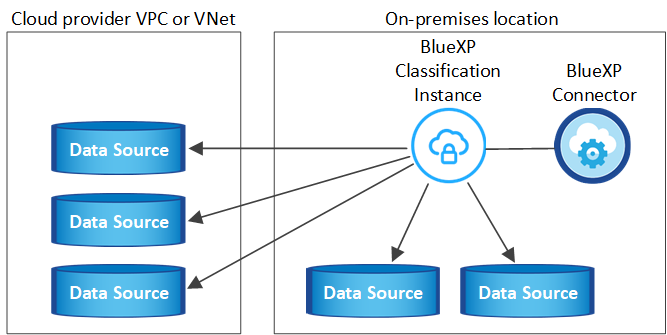
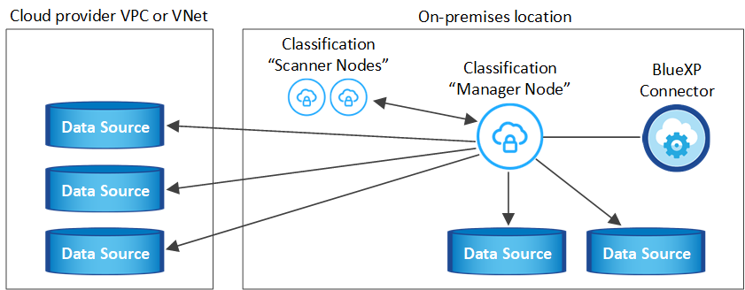
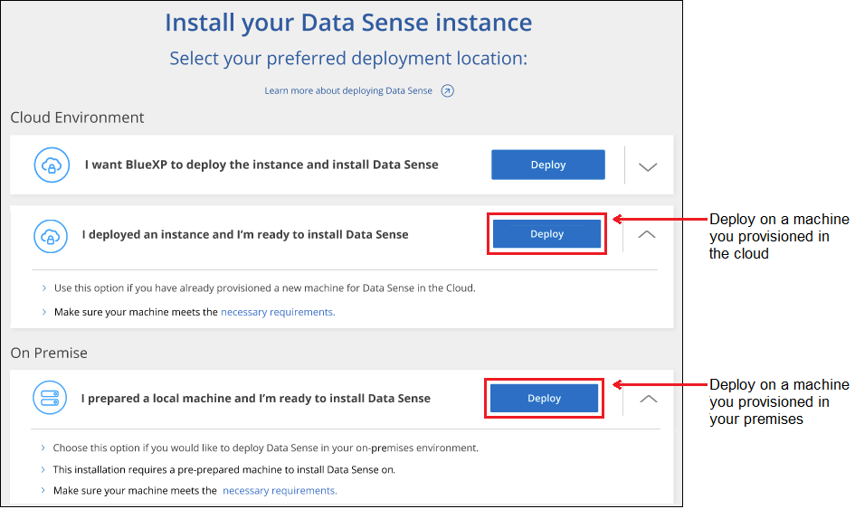
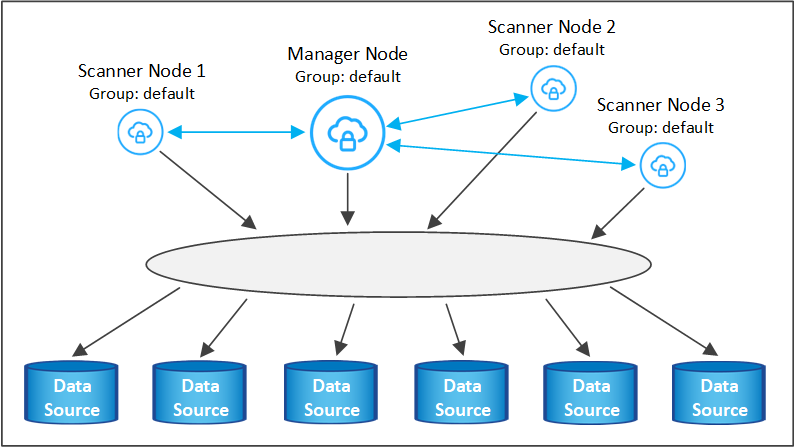
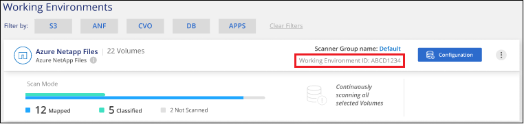
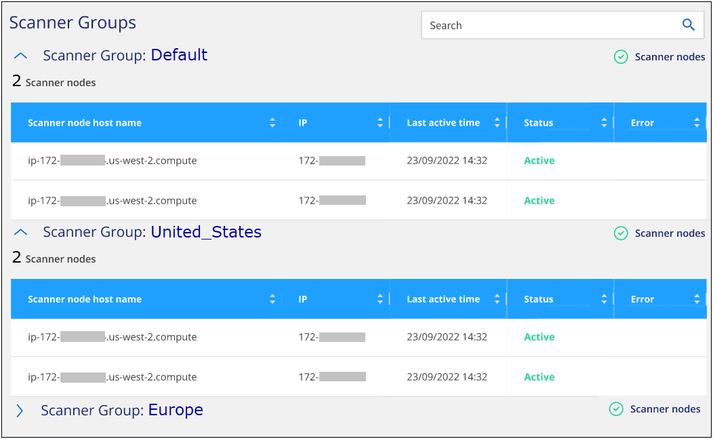

Notes de mise à jour
Notes de mise à jour
Installez la classification BlueXP sur un hôte disposant d'un accès Internet
 Suggérer des modifications
Suggérer des modifications
Procédez en quelques étapes pour installer la classification BlueXP sur un hôte Linux de votre réseau ou sur un hôte Linux dans le cloud disposant d'un accès Internet. Dans le cadre de cette installation, vous devrez déployer l'hôte Linux manuellement sur votre réseau ou dans le cloud.
L'installation sur site peut être une bonne option si vous préférez analyser les systèmes ONTAP sur site à l'aide d'une instance de classification BlueXP également située sur site, mais ce n'est pas une exigence. Le logiciel fonctionne exactement de la même manière quelle que soit la méthode d'installation choisie.
Le script d'installation de la classification BlueXP commence par vérifier si le système et l'environnement répondent aux prérequis requis. Si les conditions préalables sont toutes remplies, l'installation démarre. Si vous souhaitez vérifier les prérequis indépendamment de l'installation de la classification BlueXP, vous pouvez télécharger un pack logiciel distinct qui teste uniquement les prérequis. "Découvrez comment vérifier si votre hôte Linux est prêt à installer la classification BlueXP".
L'installation typique sur un hôte Linux dans vos locaux comporte les composants et les connexions suivants.

L'installation typique sur un hôte Linux dans le cloud comporte les composants et les connexions suivants.

Pour les très grandes configurations dans lesquelles vous numérisez des pétaoctets de données, vous pouvez inclure plusieurs hôtes pour bénéficier d'une puissance de traitement supplémentaire. Lors de l'utilisation de plusieurs systèmes hôtes, le système principal est appelé le Manager node, et les systèmes supplémentaires qui fournissent une puissance de traitement supplémentaire sont appelés scanner nodes.
Notez que vous pouvez également "Installez la classification BlueXP sur un site qui ne dispose pas d'un accès Internet" pour des sites totalement sécurisés.
Démarrage rapide
Pour commencer rapidement, suivez ces étapes ou faites défiler jusqu'aux sections restantes pour obtenir de plus amples informations.
 Créer un connecteur
Créer un connecteurSi vous n'avez pas encore de connecteur, "Déployez le connecteur sur site" Sur un hôte Linux de votre réseau ou sur un hôte Linux dans le cloud.
Vous pouvez également créer un connecteur avec votre fournisseur cloud. Voir "Création d'un connecteur dans AWS", "Création d'un connecteur dans Azure", ou "Création d'un connecteur dans GCP".
 Passer en revue les prérequis
Passer en revue les prérequisAssurez-vous que votre environnement est conforme aux conditions préalables. Notamment l'accès Internet sortant pour l'instance, la connectivité entre le connecteur et la classification BlueXP via le port 443, etc. Voir la liste complète.
Vous avez également besoin d'un système Linux qui répond à exigences suivantes.
 Téléchargez et déployez la classification BlueXP
Téléchargez et déployez la classification BlueXPTéléchargez le logiciel de classification Cloud BlueXP depuis le site de support NetApp et copiez le fichier d'installation sur l'hôte Linux que vous souhaitez utiliser. Lancez ensuite l'assistant d'installation et suivez les invites pour déployer l'instance de classification BlueXP.
 Abonnez-vous au service de classification BlueXP
Abonnez-vous au service de classification BlueXPLes 1 premiers To de données analysés par le système de classification BlueXP dans BlueXP sont gratuits pendant 30 jours. Un abonnement à votre fournisseur cloud Marketplace, ou une licence BYOL de NetApp, est nécessaire pour continuer l'analyse des données après ce point.
Créer un connecteur
Un connecteur BlueXP est requis avant de pouvoir installer et utiliser la classification BlueXP. Dans la plupart des cas, vous aurez probablement configuré un connecteur avant d'essayer d'activer la classification BlueXP, car la plupart "Les fonctionnalités BlueXP nécessitent un connecteur", mais il y a des cas où vous devrez en configurer un maintenant.
Pour en créer un dans votre environnement de fournisseur cloud, consultez la section "Création d'un connecteur dans AWS", "Création d'un connecteur dans Azure", ou "Création d'un connecteur dans GCP".
Dans certains cas, vous devez utiliser un connecteur déployé dans un fournisseur de cloud spécifique :
-
Lors de l'analyse des données dans Cloud Volumes ONTAP dans AWS, Amazon FSX pour ONTAP ou dans des compartiments AWS S3, vous utilisez un connecteur dans AWS.
-
Lorsque vous analysez des données dans Cloud Volumes ONTAP dans Azure ou dans Azure NetApp Files, vous utilisez un connecteur dans Azure.
Pour Azure NetApp Files, il doit être déployé dans la même région que les volumes que vous souhaitez analyser.
-
Pour l'analyse des données dans Cloud Volumes ONTAP dans GCP, vous utilisez un connecteur dans GCP.
Vous pouvez analyser les systèmes ONTAP sur site, les partages de fichiers non NetApp, le stockage objet S3 générique, les bases de données, les dossiers OneDrive, les comptes SharePoint et les comptes Google Drive à l'aide de ces connecteurs cloud.
Notez que vous pouvez également "Déployez le connecteur sur site" Sur un hôte Linux de votre réseau ou sur un hôte Linux du cloud. Certains utilisateurs qui prévoient d'installer la classification BlueXP sur site peuvent également choisir d'installer le connecteur sur site.
Comme vous pouvez le voir, il peut y avoir des situations où vous devez utiliser "Plusieurs connecteurs".
Vous aurez besoin de l'adresse IP ou du nom d'hôte du système de connecteur pour installer la classification BlueXP. Vous aurez ces informations si vous avez installé le connecteur sur votre site. Si le connecteur est déployé dans le cloud, vous pouvez trouver ces informations à partir de la console BlueXP : cliquez sur l'icône aide, sélectionnez support et cliquez sur BlueXP Connector.
Préparez le système hôte Linux
Le logiciel de classification BlueXP doit s'exécuter sur un hôte répondant à des exigences spécifiques en termes de système d'exploitation, de RAM, de logiciels, etc. L'hôte Linux peut se trouver sur votre réseau ou dans le cloud.
Assurez-vous de pouvoir maintenir la classification BlueXP en cours d'exécution. La machine de classification BlueXP doit continuer à analyser vos données en continu.
-
La classification BlueXP n'est pas prise en charge sur un hôte partagé avec d'autres applications : l'hôte doit être un hôte dédié.
-
Lors de la création du système hôte sur site, vous pouvez choisir entre trois tailles de système selon la taille du dataset que vous prévoyez d'analyser par la classification BlueXP.
Taille du système CPU RAM (la mémoire d'échange doit être désactivée) Disque Très grand
32 processeurs
128 GO DE RAM
1 To SSD sur /, ou
- 100 Gio disponible sur /opt
- 895 Gio disponible sur /var/lib/docker
- 5 Gio sur /tmpGrand
16 processeurs
64 GO DE RAM
500 Gio de SSD sur /, ou
- 100 Gio disponible sur /opt
- 395 Gio disponible sur /var/lib/docker
- 5 Gio sur /tmpMoyen
8 processeurs
32 GO DE RAM
200 Gio de SSD sur /, ou
- 50 Gio disponible sur /opt
- 145 Gio disponible sur /var/lib/docker
- 5 Gio sur /tmpPetit
8 processeurs
16 GO DE RAM
100 Gio de SSD sur /, ou
- 50 Gio disponible sur /opt
- 45 Gio disponible sur /var/lib/docker
- 5 Gio sur /tmpNotez qu'il existe des limites lors de l'utilisation des systèmes plus petits. Voir "Utilisation d'un type d'instance plus petit" pour plus d'informations.
-
Lors du déploiement d'une instance de calcul dans le cloud pour votre installation de classification BlueXP, nous vous recommandons de opter pour un système qui répond à la configuration requise pour les « grands » systèmes ci-dessus :
-
Type d'instance AWS EC2: Nous recommandons "m6i.4xlarge". "Consultez la section autres types d'instances AWS".
-
Taille de VM Azure: Nous recommandons "Standard_D16s_v3". "Consultez la section autres types d'instances Azure".
-
Type de machine GCP: Nous recommandons "n2-standard-16". "Voir autres types d'instances GCP".
-
-
Autorisations de dossier UNIX : les autorisations UNIX minimales suivantes sont requises :
Dossier Autorisations minimales /tmp
rwxrwxrwt/opt
rwxr-xr-x/var/lib/docker
rwx------/usr/lib/systemd/system
rwxr-xr-x -
Système d'exploitation :
-
Les systèmes d'exploitation suivants nécessitent l'utilisation du moteur de mise en conteneurs Docker :
-
Red Hat Enterprise Linux version 7.8 et 7.9
-
CentOS versions 7.8 et 7.9
-
Ubuntu 22.04 (requiert la classification BlueXP version 1.23 ou supérieure)
-
-
Les systèmes d'exploitation suivants nécessitent l'utilisation du moteur de conteneur Podman et requièrent la classification BlueXP version 1.26 ou supérieure :
-
Red Hat Enterprise Linux version 9.0, 9.1 et 9.2
Notez que les fonctionnalités suivantes ne sont pas prises en charge actuellement avec RHEL 9.x :
-
Installation dans un site sombre
-
Numérisation distribuée ; utilisation d'un nœud de scanner maître et de nœuds de scanner distants
-
-
-
-
Gestion des abonnements Red Hat : l'hôte doit être enregistré auprès de la gestion des abonnements Red Hat. S'il n'est pas enregistré, le système ne peut pas accéder aux référentiels pour mettre à jour les logiciels tiers requis pendant l'installation.
-
Logiciels supplémentaires : vous devez installer les logiciels suivants sur l'hôte avant d'installer la classification BlueXP :
-
En fonction du système d'exploitation que vous utilisez, vous devrez installer l'un des moteurs de mise en conteneurs :
-
Docker Engine version 19.3.1 ou supérieure. "Voir les instructions d'installation".
"Regardez cette vidéo" Pour une démonstration rapide de l'installation de Docker sur CentOS.
-
Podman version 4 ou supérieure. Pour installer Podman, mettez à jour vos packages système (
sudo yum update -y), puis installez Podman (sudo yum install podman -y).
-
-
Python version 3.6 ou supérieure. "Voir les instructions d'installation".
-
-
Considérations NTP : NetApp recommande de configurer le système de classification BlueXP pour utiliser un service NTP (Network Time Protocol). L'heure doit être synchronisée entre le système de classification BlueXP et le système BlueXP Connector.
-
Firesund considérations: Si vous prévoyez d'utiliser
firewalld, Nous vous recommandons de l'activer avant d'installer la classification BlueXP. Exécutez les commandes suivantes pour configurerfirewalldPour qu'il soit compatible avec la classification BlueXP :firewall-cmd --permanent --add-service=http firewall-cmd --permanent --add-service=https firewall-cmd --permanent --add-port=80/tcp firewall-cmd --permanent --add-port=8080/tcp firewall-cmd --permanent --add-port=443/tcp firewall-cmd --reload
Si vous prévoyez d'utiliser des hôtes de classification BlueXP supplémentaires comme nœuds d'analyse, ajoutez ces règles à votre système principal à ce moment :
firewall-cmd --permanent --add-port=2377/tcp firewall-cmd --permanent --add-port=7946/udp firewall-cmd --permanent --add-port=7946/tcp firewall-cmd --permanent --add-port=4789/udp
Notez que vous devez redémarrer Docker ou Podman chaque fois que vous activez ou mettez à jour
firewalldparamètres.

|
L'adresse IP du système hôte de classification BlueXP ne peut pas être modifiée après l'installation. |
Assurez un accès Internet sortant à partir de la classification BlueXP
La classification BlueXP nécessite un accès Internet sortant. Si votre réseau physique ou virtuel utilise un serveur proxy pour l'accès à Internet, assurez-vous que l'instance de classification BlueXP dispose d'un accès Internet sortant pour contacter les terminaux suivants.
| Terminaux | Objectif |
|---|---|
https://api.bluexp.netapp.com |
Communication avec le service BlueXP, qui inclut les comptes NetApp. |
https://netapp-cloud-account.auth0.com https://auth0.com |
Communication avec le site Web BlueXP pour l'authentification centralisée des utilisateurs. |
https://support.compliance.api.bluexp.netapp.com/ https://hub.docker.com https://auth.docker.io https://registry-1.docker.io https://index.docker.io/ https://dseasb33srnrn.cloudfront.net/ https://production.cloudflare.docker.com/ |
Permet d'accéder aux images logicielles, aux manifestes, aux modèles et à l'envoi de journaux et de mesures. |
https://support.compliance.api.bluexp.netapp.com/ |
Permet à NetApp de diffuser des données à partir d'enregistrements d'audit. |
https://github.com/docker https://download.docker.com |
Fournit les packages prérequis pour l'installation de docker. |
http://mirror.centos.org http://mirrorlist.centos.org http://mirror.centos.org/centos/7/extras/x86_64/Packages/container-selinux-2.107-3.el7.noarch.rpm |
Fournit des packages prérequis pour l'installation de CentOS. |
http://packages.ubuntu.com/ |
Fournit les packages prérequis pour l'installation d'Ubuntu. |
Vérifiez que tous les ports requis sont activés
Vous devez vous assurer que tous les ports requis sont ouverts pour la communication entre le connecteur, la classification BlueXP, Active Directory et vos sources de données.
| Type de connexion | Ports | Description |
|---|---|---|
Classification de Connector <> BlueXP |
8080 (TCP), 443 (TCP) et 80 |
Les règles de pare-feu ou de routage du connecteur doivent autoriser le trafic entrant et sortant via le port 443 vers et depuis l'instance de classification BlueXP. Assurez-vous que le port 8080 est ouvert pour voir la progression de l'installation dans BlueXP. |
Connecteur <> cluster ONTAP (NAS) |
443 (TCP) |
BlueXP détecte les clusters ONTAP via HTTPS. Si vous utilisez des stratégies de pare-feu personnalisées, elles doivent répondre aux exigences suivantes :
|
Classification BlueXP <> cluster ONTAP |
|
La classification BlueXP nécessite une connexion réseau à chaque sous-réseau Cloud Volumes ONTAP ou système ONTAP sur site. Les pare-feu ou les règles de routage pour Cloud Volumes ONTAP doivent autoriser les connexions entrantes à partir de l'instance de classification BlueXP. Assurez-vous que les ports suivants sont ouverts pour l'instance de classification BlueXP :
Les règles d'exportation des volumes NFS doivent autoriser l'accès à partir de l'instance de classification BlueXP. |
Classification BlueXP <> Active Directory |
389 (TCP ET UDP), 636 (TCP), 3268 (TCP) ET 3269 (TCP) |
Un Active Directory doit déjà être configuré pour les utilisateurs de votre entreprise. De plus, la classification BlueXP requiert des informations d'identification Active Directory pour analyser les volumes CIFS. Vous devez disposer des informations pour Active Directory :
|
Si vous utilisez plusieurs hôtes de classification BlueXP pour augmenter la puissance de traitement afin d'analyser vos sources de données, vous devez activer des ports/protocoles supplémentaires. "Voir la configuration de port supplémentaire requise".
Installez la classification BlueXP sur l'hôte Linux
Pour les configurations standard, le logiciel est installé sur un système hôte unique. Découvrez ces étapes ici.

Pour les très grandes configurations dans lesquelles vous numérisez des pétaoctets de données, vous pouvez inclure plusieurs hôtes pour bénéficier d'une puissance de traitement supplémentaire. Découvrez ces étapes ici.

Voir Préparation du système hôte Linux et Vérification des prérequis Liste complète des exigences avant de déployer la classification BlueXP.
Les mises à niveau du logiciel de classification BlueXP sont automatisées tant que l'instance dispose d'une connectivité Internet.
|
|
La classification BlueXP est actuellement incapable d'analyser les compartiments S3, Azure NetApp Files ou FSX pour ONTAP lorsque le logiciel est installé sur site. Dans ce cas, vous devrez déployer un connecteur et une instance séparés de la classification BlueXP dans le cloud et "Basculer entre les connecteurs" pour les différentes sources de données. |
Installation à un seul hôte pour les configurations courantes
Étudiez la configuration requise et suivez les étapes ci-dessous lors de l'installation du logiciel de classification BlueXP sur un hôte sur site unique.
"Regardez cette vidéo" Pour voir comment installer la classification BlueXP.
Notez que toutes les activités d'installation sont consignées lors de l'installation de la classification BlueXP. Si vous rencontrez des problèmes lors de l'installation, vous pouvez afficher le contenu du journal d'audit d'installation. Il est écrit dans /opt/netapp/install_logs/. "Pour en savoir plus, cliquez ici".
-
Vérifiez que votre système Linux est conforme à la configuration requise pour l'hôte.
-
Vérifiez que le système dispose des deux packages logiciels prérequis installés (Docker Engine ou Podman et Python 3).
-
Assurez-vous que vous disposez des privilèges root sur le système Linux.
-
Si vous utilisez un proxy pour accéder à Internet :
-
Vous aurez besoin des informations du serveur proxy (adresse IP ou nom d'hôte, port de connexion, schéma de connexion : https ou http, nom d'utilisateur et mot de passe).
-
Si le proxy effectue l'interception TLS, vous devez connaître le chemin d'accès au système de classification BlueXP Linux où sont stockés les certificats TLS CA.
-
Le proxy doit être non transparent - nous ne prenons actuellement pas en charge les proxys transparents.
-
L'utilisateur doit être un utilisateur local. Les utilisateurs du domaine ne sont pas pris en charge.
-
-
Vérifiez que votre environnement hors ligne répond aux besoins autorisations et connectivité.
-
Téléchargez le logiciel de classification BlueXP depuis le "Site de support NetApp". Le fichier que vous devez sélectionner est nommé DATASESNSE-INSTALLER-<version>.tar.gz.
-
Copiez le fichier d'installation sur l'hôte Linux que vous envisagez d'utiliser (à l'aide de
scpou une autre méthode). -
Décompressez le fichier d'installation sur la machine hôte, par exemple :
tar -xzf DATASENSE-INSTALLER-V1.25.0.tar.gz -
Dans BlueXP, sélectionnez gouvernance > Classification.
-
Cliquez sur Activer détection de données.

-
Selon que vous installez la classification BlueXP sur une instance préparée dans le cloud ou sur une instance préparée dans votre environnement sur site, cliquez sur le bouton Deploy approprié pour démarrer l'installation de la classification BlueXP.

-
La boîte de dialogue Deploy Data Sense on local s'affiche. Copiez la commande fournie (par exemple :
sudo ./install.sh -a 12345 -c 27AG75 -t 2198qq) et collez-le dans un fichier texte pour pouvoir l'utiliser ultérieurement. Cliquez ensuite sur Fermer pour fermer la boîte de dialogue. -
Sur la machine hôte, entrez la commande que vous avez copiée, puis suivez une série d'invites, ou vous pouvez fournir la commande complète incluant tous les paramètres requis comme arguments de ligne de commande.
Notez que le programme d'installation effectue une pré-vérification afin de s'assurer que vos exigences système et réseau sont en place pour une installation réussie. "Regardez cette vidéo" pour comprendre les messages de pré-vérification et les implications.
Entrez les paramètres comme demandé : Saisissez la commande complète : -
Collez la commande que vous avez copiée à partir de l'étape 7 :
sudo ./install.sh -a <account_id> -c <client_id> -t <user_token>Si vous installez sur une instance cloud (pas sur site), ajoutez
--manual-cloud-install <cloud_provider>. -
Entrez l'adresse IP ou le nom d'hôte de la machine hôte de classification BlueXP afin qu'elle soit accessible par le système de connecteurs.
-
Entrez l'adresse IP ou le nom d'hôte de la machine hôte du connecteur BlueXP afin que le système de classification BlueXP puisse y accéder.
-
Entrez les détails du proxy comme vous y êtes invité. Si votre connecteur BlueXP utilise déjà un proxy, il n'est pas nécessaire de saisir à nouveau ces informations ici, car la classification BlueXP utilisera automatiquement le proxy utilisé par le connecteur.
Vous pouvez également créer l'ensemble de la commande à l'avance, en fournissant les paramètres d'hôte et de proxy nécessaires :
sudo ./install.sh -a <account_id> -c <client_id> -t <user_token> --host <ds_host> --manager-host <cm_host> --manual-cloud-install <cloud_provider> --proxy-host <proxy_host> --proxy-port <proxy_port> --proxy-scheme <proxy_scheme> --proxy-user <proxy_user> --proxy-password <proxy_password> --cacert-folder-path <ca_cert_dir>Valeurs variables :
-
Account_ID = ID du compte NetApp
-
Client_ID = connecteur client ID (ajoutez le suffixe "clients" à l'ID client s'il n'y en a pas déjà)
-
User_token = jeton d'accès utilisateur JWT
-
Ds_host = adresse IP ou nom d'hôte du système de classification BlueXP Linux.
-
Cm_host = adresse IP ou nom d'hôte du système de connecteurs BlueXP.
-
Cloud_Provider = lors de l'installation sur une instance cloud, entrez « AWS », « Azure » ou « GCP » en fonction du fournisseur de cloud.
-
Proxy_host = IP ou nom d'hôte du serveur proxy si l'hôte est derrière un serveur proxy.
-
Proxy_port = Port pour se connecter au serveur proxy (80 par défaut).
-
Proxy_schéma = schéma de connexion : https ou http (par défaut : http).
-
Proxy_user = utilisateur authentifié pour se connecter au serveur proxy, si une authentification de base est requise. L'utilisateur doit être un utilisateur local - les utilisateurs de domaine ne sont pas pris en charge.
-
Proxy_password = Mot de passe pour le nom d'utilisateur que vous avez spécifié.
-
Ca_cert_dir = chemin du système de classification BlueXP Linux contenant des bundles de certificats TLS CA supplémentaires. Requis uniquement si le proxy effectue une interception TLS.
-
Le programme d'installation de classification BlueXP installe les packages, enregistre l'installation et installe la classification BlueXP. L'installation peut prendre entre 10 et 20 minutes.
En cas de connectivité sur le port 8080 entre la machine hôte et l'instance de connecteur, vous verrez la progression de l'installation dans l'onglet de classification BlueXP.
Dans la page Configuration, vous pouvez sélectionner les sources de données à numériser.
Vous pouvez également "Configurez les licences pour la classification BlueXP" à ce moment-là. Vous ne serez facturé que lorsque votre essai gratuit de 30 jours se terminera.
Ajoutez des nœuds de scanner à un déploiement existant
Vous pouvez ajouter d'autres nœuds de numérisation si vous trouvez que vous avez besoin d'une puissance de traitement plus élevée pour numériser vos sources de données. Vous pouvez ajouter les nœuds du scanner immédiatement après avoir installé le nœud du gestionnaire, ou vous pouvez ajouter un nœud du scanner ultérieurement. Par exemple, si vous réalisez que la quantité de données de l'une de vos sources de données a doublé ou triplé au bout de 6 mois, vous pouvez ajouter un nouveau nœud du scanner pour faciliter l'analyse des données.
Il existe deux façons d'ajouter des nœuds de scanner supplémentaires :
-
ajoutez un nœud pour faciliter la numérisation de toutes les sources de données
-
ajout d'un nœud pour faciliter l'analyse d'une source de données spécifique ou d'un groupe spécifique de sources de données (généralement basé sur l'emplacement)
Par défaut, tous les nouveaux nœuds de scanner que vous ajoutez sont ajoutés au pool général de ressources de numérisation. Il s'agit du « groupe de scanner par défaut ». Dans l'image ci-dessous, il y a 1 nœud Manager et 3 nœuds de scanner dans le groupe « par défaut » qui sont tous des données de numérisation provenant des 6 sources de données.

Si vous souhaitez analyser certaines sources de données par des nœuds de scanner qui sont physiquement plus proches des sources de données, vous pouvez définir un nœud de scanner, ou un groupe de nœuds de scanner, pour analyser une source de données spécifique ou un groupe de sources de données. Dans l'image ci-dessous, il y a 1 nœud Manager et 3 nœuds scanner.
-
Le nœud Manager se trouve dans le groupe « par défaut » et il analyse 1 source de données
-
Le nœud du scanner 1 se trouve dans le groupe États-unis et analyse 2 sources de données
-
Les nœuds du scanner 2 et 3 se trouvent dans le groupe « europe » et partagent les tâches de numérisation pour 3 sources de données

Les groupes d'analyse de classification BlueXP peuvent être définis comme des zones géographiques distinctes où vos données sont stockées. Vous pouvez déployer plusieurs nœuds d'analyse de classification BlueXP à travers le monde et choisir un groupe de scanner pour chaque nœud. De cette façon, chaque nœud du scanner analyse les données qui lui sont les plus proches. Plus le nœud du scanner est proche des données, mieux c'est, car il réduit la latence du réseau autant que possible lors de l'acquisition des données.
Vous pouvez choisir les groupes de scanner à ajouter à la classification BlueXP et choisir leur nom. La classification BlueXP n'applique pas qu'un nœud mappé à un groupe de scanner nommé « europe » soit déployé en Europe.
Pour installer d'autres nœuds d'analyse de classification BlueXP, procédez comme suit :
-
Préparez les systèmes hôtes Linux qui feront office de nœuds de scanner
-
Téléchargez le logiciel Data Sense sur ces systèmes Linux
-
Exécutez une commande sur le nœud Manager pour identifier les nœuds du scanner
-
Suivez les étapes de déploiement du logiciel sur les nœuds du scanner (et définissez éventuellement un « groupe de scanner » pour certains nœuds du scanner).
-
Si vous avez défini un scanner group, sur le nœud Manager :
-
Ouvrez le fichier « environnement_de_travail_vers_scanner_groupe_config.yml » et définissez les environnements de travail qui seront analysés par chaque groupe de scanner
-
Exécutez le script suivant pour enregistrer ces informations de mappage avec tous les nœuds du scanner :
update_we_scanner_group_from_config_file.sh
-
-
Vérifiez que tous vos systèmes Linux pour les nœuds du scanner sont conformes à la configuration requise pour l'hôte.
-
Vérifier que les deux logiciels prérequis sont installés sur les systèmes (Docker Engine ou Podman et Python 3).
-
Assurez-vous que vous disposez des privilèges root sur les systèmes Linux.
-
Vérifiez que votre environnement répond aux exigences requises autorisations et connectivité.
-
Vous devez disposer des adresses IP des hôtes du nœud scanner que vous ajoutez.
-
Vous devez disposer de l'adresse IP du système hôte du nœud BlueXP classification Manager
-
Vous devez disposer de l'adresse IP ou du nom d'hôte du système Connector, de votre ID de compte NetApp, de votre ID de client Connector et du jeton d'accès utilisateur. Si vous prévoyez d'utiliser des groupes de scanner, vous devrez connaître l'ID de l'environnement de travail pour chaque source de données de votre compte. Voir étapes préalables ci-dessous pour obtenir ces informations.
-
Les ports et protocoles suivants doivent être activés sur tous les hôtes :
Port Protocoles Description 2377
TCP
Communications de gestion du cluster
7946
TCP, UDP
Communication inter-nœuds
4789
UDP
Superposition du trafic réseau
50
ESP
Trafic du réseau de superposition IPSec chiffré (ESP)
111
TCP, UDP
Serveur NFS pour le partage de fichiers entre les hôtes (requis de chaque nœud de scanner vers le nœud gestionnaire)
2049
TCP, UDP
Serveur NFS pour le partage de fichiers entre les hôtes (requis de chaque nœud de scanner vers le nœud gestionnaire)
-
Si vous utilisez
firewalldSur vos machines de classification BlueXP, nous vous recommandons de l'activer avant d'installer la classification BlueXP. Exécutez les commandes suivantes pour configurerfirewalldPour qu'il soit compatible avec la classification BlueXP :firewall-cmd --permanent --add-service=http firewall-cmd --permanent --add-service=https firewall-cmd --permanent --add-port=80/tcp firewall-cmd --permanent --add-port=8080/tcp firewall-cmd --permanent --add-port=443/tcp firewall-cmd --permanent --add-port=2377/tcp firewall-cmd --permanent --add-port=7946/udp firewall-cmd --permanent --add-port=7946/tcp firewall-cmd --permanent --add-port=4789/udp firewall-cmd --reload
Notez que vous devez redémarrer Docker ou Podman chaque fois que vous activez ou mettez à jour
firewalldparamètres.
Procédez comme suit pour obtenir l'ID de compte NetApp, l'ID client Connector, le nom du serveur Connector et le jeton d'accès utilisateur nécessaires à l'ajout de nœuds de scanner.
-
Dans la barre de menus BlueXP, cliquez sur compte > gérer les comptes.

-
Copiez le ID de compte.
-
Dans la barre de menus BlueXP, cliquez sur aide > support > connecteur BlueXP.

-
Copiez le connecteur ID client et le Nom du serveur.
-
Si vous prévoyez d'utiliser des groupes de scanner, dans l'onglet Configuration de la classification BlueXP, copiez l'ID d'environnement de travail de chaque environnement de travail que vous prévoyez d'ajouter à un groupe de scanner.

-
Accédez au "API Documentation Developer Hub" Et cliquez sur Apprenez à vous authentifier.

-
Suivez les instructions d'authentification, en utilisant le nom d'utilisateur et le mot de passe de l'administrateur du compte dans les paramètres "nom d'utilisateur" et "mot de passe".
-
Copiez ensuite le jeton d'accès de la réponse.
-
Sur le nœud du gestionnaire de classification BlueXP, exécutez le script « add_scanner_node.sh ». Par exemple, cette commande ajoute 2 nœuds de scanner :
sudo ./add_scanner_node.sh -a <account_id> -c <client_id> -m <cm_host> -h <ds_manager_ip> -n <node_private_ip_1,node_private_ip_2> -t <user_token>Valeurs variables :
-
Account_ID = ID du compte NetApp
-
Client_ID = connecteur client ID (ajoutez le suffixe "clients" à l'ID client que vous avez copié dans les étapes préalables)
-
Cm_host = adresse IP ou nom d'hôte du système de connecteurs
-
Ds_Manager_ip = adresse IP privée du système de nœuds BlueXP classification Manager
-
Node_private_ip = adresses IP des systèmes de nœuds du scanner de classification BlueXP (les adresses IP de plusieurs nœuds du scanner sont séparées par une virgule)
-
User_token = jeton d'accès utilisateur JWT
-
-
Avant la fin du script add_scanner_node, une boîte de dialogue affiche la commande d'installation requise pour les nœuds du scanner. Copiez la commande (par exemple :
sudo ./node_install.sh -m 10.11.12.13 -t ABCDEF1s35212 -u red95467j) et enregistrez-le dans un fichier texte. -
Sur chaque hôte de nœud du scanner :
-
Copiez le fichier d'installation de Data Sense (DATASENNSE-INSTALLER-<version>.tar.gz) sur la machine hôte (à l'aide de
scpou une autre méthode). -
Décompressez le fichier d'installation.
-
Collez et exécutez la commande que vous avez copiée à l'étape 2.
-
Si vous souhaitez ajouter un nœud de scanner à un « scanner group », ajoutez le paramètre -r <scanner_group_name> à la commande. Sinon, le nœud du scanner est ajouté au groupe « défaut ».
Une fois l'installation terminée sur tous les nœuds du scanner et qu'ils ont été associés au nœud du gestionnaire, le script « Add_scanner_node.sh » se termine également. L'installation peut prendre entre 10 et 20 minutes.
-
-
Si vous avez ajouté des nœuds de scanner à un scanner group, revenez au nœud Manager et effectuez les 2 tâches suivantes :
-
Ouvrez le fichier «/opt/netapp/Datase/working_Environment_to_scanner_group_config.yml » et entrez le mappage pour lequel les groupes de lecteurs vont analyser des environnements de travail spécifiques. Vous devez avoir l'ID Working Environment pour chaque source de données. Par exemple, les entrées suivantes ajoutent 2 environnements de travail au groupe de scanner « europe » et 2 au groupe de scanner « united_States » :
scanner_groups: europe: working_environments: - "working_environment_id1" - "working_environment_id2" united_states: working_environments: - "working_environment_id3" - "working_environment_id4"Tout environnement de travail qui n'est pas ajouté à la liste est analysé par le groupe « par défaut ». Vous devez avoir au moins un gestionnaire ou un nœud de scanner dans le groupe « par défaut ».
-
Exécutez le script suivant pour enregistrer ces informations de mappage avec tous les nœuds du scanner :
/opt/netapp/Datasense/tools/update_we_scanner_group_from_config_file.sh
-
La classification BlueXP est configurée avec des nœuds Manager et scanner pour analyser toutes vos sources de données.
Dans la page Configuration, vous pouvez sélectionner les sources de données que vous souhaitez numériser, si vous ne l'avez pas déjà fait. Si vous avez créé des groupes de scanner, chaque source de données est analysée par les nœuds du scanner dans le groupe correspondant.
Vous pouvez voir le nom du groupe de lecteurs pour chaque environnement de travail dans la page Configuration.
Vous pouvez également afficher la liste de tous les groupes de scanner, ainsi que l'adresse IP et l'état de chaque nœud de scanner du groupe, en bas de la page Configuration.

C'est possible "Configurez les licences pour la classification BlueXP" à ce moment-là. Vous ne serez facturé que lorsque votre essai gratuit de 30 jours se terminera.
Installation de plusieurs hôtes pour de grandes configurations
Pour les très grandes configurations dans lesquelles vous numérisez des pétaoctets de données, vous pouvez inclure plusieurs hôtes pour bénéficier d'une puissance de traitement supplémentaire. Lors de l'utilisation de plusieurs systèmes hôtes, le système principal est appelé le Manager node et les systèmes supplémentaires qui fournissent une puissance de traitement supplémentaire sont appelés scanner nodes.
Suivez ces étapes lors de l'installation simultanée du logiciel de classification BlueXP sur plusieurs hôtes sur site. Notez que vous ne pouvez pas utiliser de « groupes de scanner » lors du déploiement de plusieurs hôtes de cette façon.
-
Vérifiez que tous vos systèmes Linux pour les nœuds Manager et scanner sont conformes à la configuration requise pour l'hôte.
-
Vérifiez que les deux packages logiciels prérequis sont installés sur les systèmes (Docker ou Podman Engine et Python 3).
-
Assurez-vous que vous disposez des privilèges root sur les systèmes Linux.
-
Vérifiez que votre environnement répond aux exigences requises autorisations et connectivité.
-
Vous devez disposer des adresses IP des hôtes du nœud de scanner que vous prévoyez d'utiliser.
-
Les ports et protocoles suivants doivent être activés sur tous les hôtes :
Port Protocoles Description 2377
TCP
Communications de gestion du cluster
7946
TCP, UDP
Communication inter-nœuds
4789
UDP
Superposition du trafic réseau
50
ESP
Trafic du réseau de superposition IPSec chiffré (ESP)
111
TCP, UDP
Serveur NFS pour le partage de fichiers entre les hôtes (requis de chaque nœud de scanner vers le nœud gestionnaire)
2049
TCP, UDP
Serveur NFS pour le partage de fichiers entre les hôtes (requis de chaque nœud de scanner vers le nœud gestionnaire)
-
Suivez les étapes 1 à 7 du Installation avec un seul hôte sur le nœud gestionnaire.
-
Comme indiqué à l'étape 8, lorsque le programme d'installation vous le demande, vous pouvez entrer les valeurs requises dans une série d'invites, ou vous pouvez fournir les paramètres requis comme arguments de ligne de commande au programme d'installation.
En plus des variables disponibles pour une installation à un seul hôte, une nouvelle option -n <node_ip> est utilisée pour spécifier les adresses IP des nœuds du scanner. Plusieurs adresses IP de nœuds de scanner sont séparées par une virgule.
Par exemple, cette commande ajoute 3 nœuds de scanner :
sudo ./install.sh -a <account_id> -c <client_id> -t <user_token> --host <ds_host> --manager-host <cm_host> -n <node_ip1>,<node_ip2>,<node_ip3> --proxy-host <proxy_host> --proxy-port <proxy_port> --proxy-scheme <proxy_scheme> --proxy-user <proxy_user> --proxy-password <proxy_password> -
Avant la fin de l'installation du nœud Manager, une boîte de dialogue affiche la commande d'installation requise pour les nœuds du scanner. Copiez la commande (par exemple,
sudo ./node_install.sh -m 10.11.12.13 -t ABCDEF-1-3u69m1-1s35212) et enregistrez-le dans un fichier texte. -
Sur chaque hôte de nœud du scanner :
-
Copiez le fichier d'installation de Data Sense (DATASENNSE-INSTALLER-<version>.tar.gz) sur la machine hôte (à l'aide de
scpou une autre méthode). -
Décompressez le fichier d'installation.
-
Collez et exécutez la commande que vous avez copiée à l'étape 3.
Une fois l'installation terminée sur tous les nœuds du scanner et qu'ils ont été associés au nœud du gestionnaire, l'installation du nœud du gestionnaire se termine également.
-
Le programme d'installation de classification BlueXP termine l'installation des packages et enregistre l'installation. L'installation peut prendre entre 10 et 20 minutes.
Dans la page Configuration, vous pouvez sélectionner les sources de données à numériser.
Vous pouvez également "Configurez les licences pour la classification BlueXP" à ce moment-là. Vous ne serez facturé que lorsque votre essai gratuit de 30 jours se terminera.